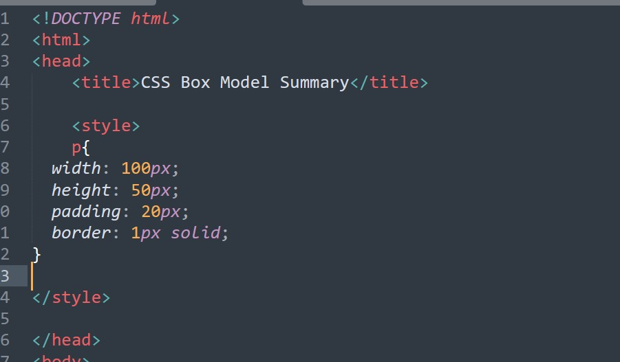

I am a paragraph of text that has a few words in it.
in the Head of this page, is where you will beautify the
by writting a CSS ELEMENT called Style.
A really important thing to remember when writing CSS, or working on the web as a whole, is that everything displayed by CSS is a box. Whether that's a box that uses border-radius to look like a circle, or even just some text: the key thing to remember is that it's all boxes.
Content and sizing
Boxes have different behavior based on their display value, their set dimensions, and the content that lives within them. This content could be even more boxes—generated by child elements—or plain text content. Either way, this content will affect the size of the box by default. You can control this by using extrinsic sizing, or, you can continue to let the browser make decisions for you based on the content size, using intrinsic sizing.
Key Team
When content is too big for the box it is in, we call this overflow. You can manage how an element handles overflow content, using the overflow property. When you switch to intrinsic sizing, you are letting the browser make decisions for you, based on the box's content size. It's much more difficult for there to be overflow with intrinsic sizing because our box will resize with its content, rather than try to size the content. It's important to remember that this is the default, flexible behavior of a browser. Though extrinsic sizing gives more control on the surface, intrinsic sizing provides the most flexibility, most of the time.
The areas of the box model
The four main areas of the box model: content box, padding box, border box and margin box.
You start with content box, which is the area that the content lives in. As you learned before: this content can control the size of its parent, so is usually the most variably sized area.
The padding box surrounds the content box and is the space created by the padding property. Because padding is inside the box, the background of the box will be visible in the space that it creates. If our box has overflow rules set, such as overflow: auto or overflow: scroll, the scrollbars will occupy this space too.
The border box surrounds the padding box and its space is occupied by the border value. The border box is the bounds of your box and the border edge is the limit of what you can visually see. The border property is used to visually frame an element.
The final area, the margin box, is the space around your box, defined by the margin rule on your box. Properties such as outline and box-shadow occupy this space too because they are painted on top, so they don't affect the size of our box. You could have an outline-width of 200px on our box and everything inside and including the border box would be exactly the same size.

Debugging the box model
Browser DevTools provide a visualisation of a selected box's box model calculations, which can help you understand how the box model works and importantly, how it is affecting the website you're working on.
Controlling the box model
According the note, To understand how to control the box model, you first need to understand what happens in your browser.